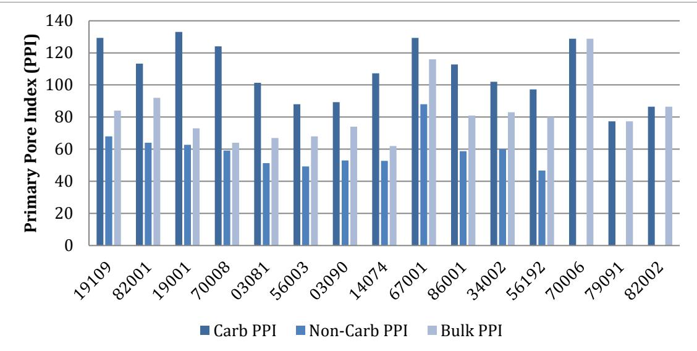
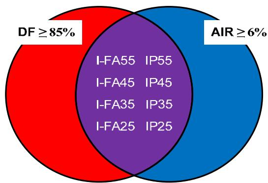
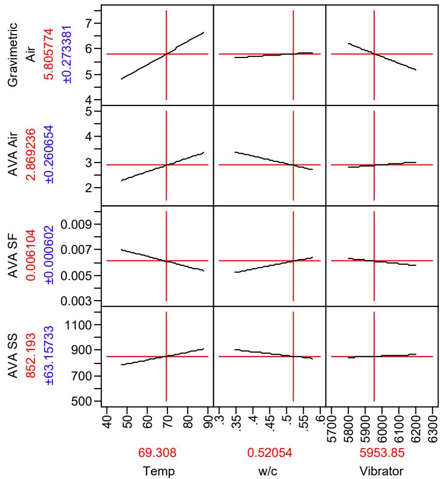
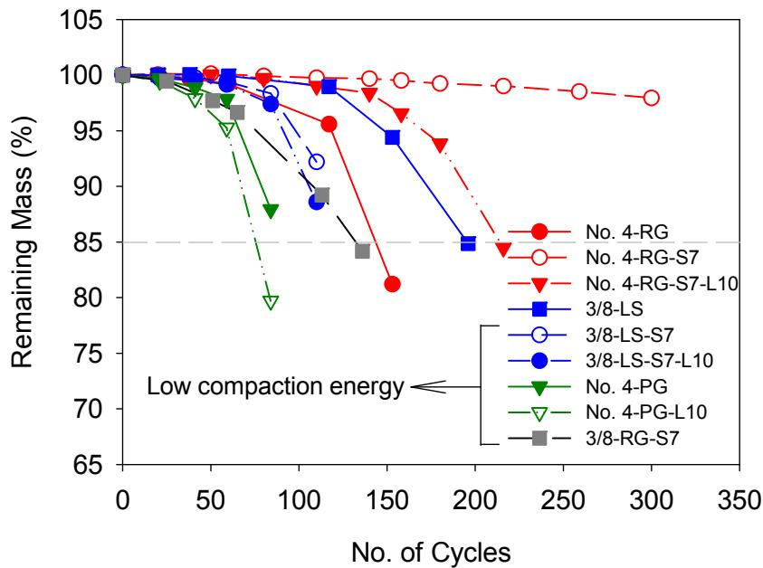
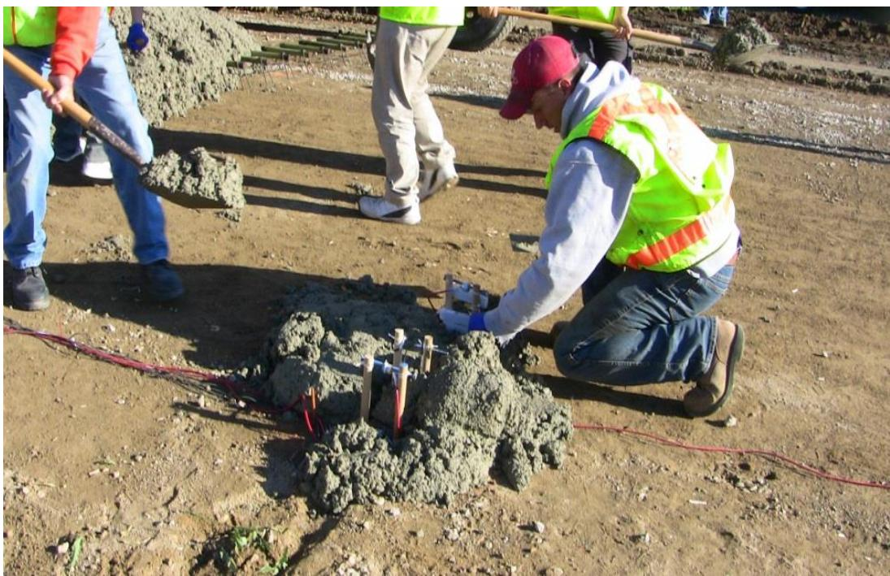
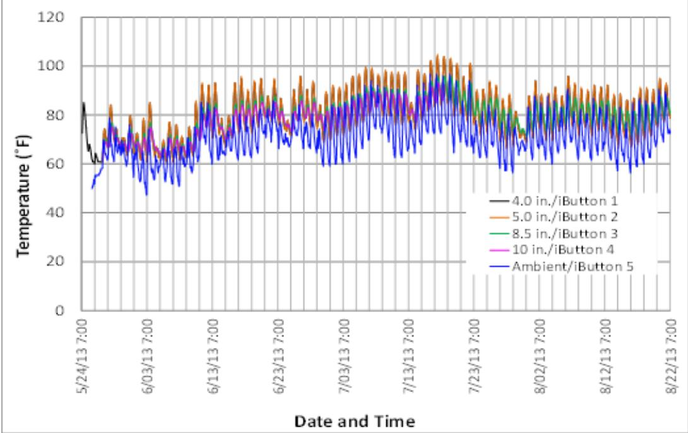
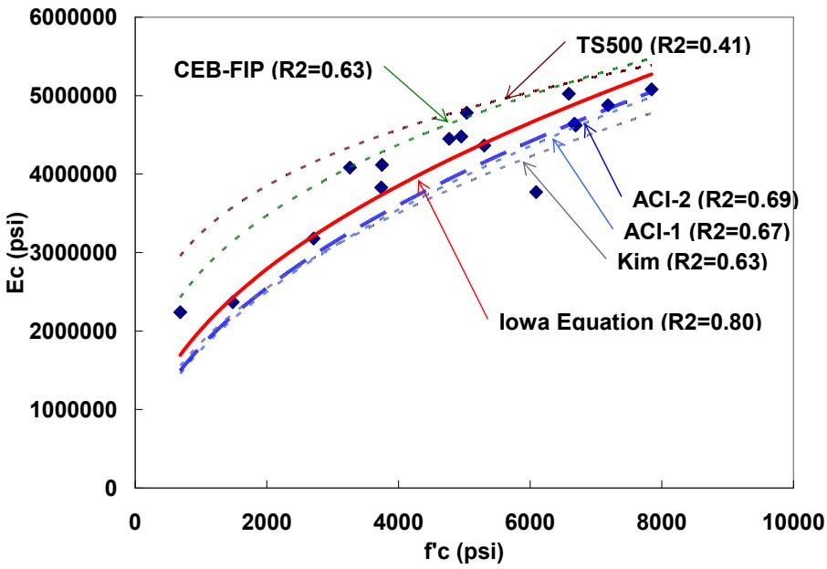

Concrete Materials & Mixtures
Concrete materials and mixtures are engineered composite systems composed of coarse and fine aggregates, hydraulic cementitious binders, water, and chemical admixtures that combine to form a workable paste hardening into a solid structural matrix. The fundamental mechanism governing the transition from plastic to hardened state is the exothermic hydration of the binder, which produces calcium-silicate-hydrate gel and crystalline phases that bind aggregate particles together while releasing heat that influences setting time and early-age strength development [1] [2] [3]. The proportions of these constituents determine the fresh-state workability and hardened-state performance attributes such as compressive strength, stiffness, permeability, and dimensional stability through their control over capillary porosity and the internal void structure [4] [5] [6]. Durability in aggressive environments is primarily governed by the microstructure, particularly the air-void system which mitigates freeze-thaw damage by providing space for ice expansion, and the water-to-binder ratio which limits permeability and saturation [5] [7] [6]. Mixture design involves balancing competing requirements among strength, workability, and thermal behavior by selecting specific binder types, supplementary cementitious materials, and admixtures to tailor the composite for defined structural and environmental performance objectives [8] [5] [9].
Concrete Materials & Mixtures unifies the physical components, chemical processes, and engineering protocols required to produce durable structural elements. Aggregates provide the essential structural bulk and mineral diversity that define the physical framework of concrete mixtures. Cementitious Materials & Chemistry governs hydration and microstructural boundaries via components like Supplementary Cementitious Materials and Type K Shrinkage-Compensating Cement. Mix Design & Specialty Mixtures operationalizes the parent category’s technical domain by systematically proportioning cementitious binders, aggregates, and admixtures to engineer specific performance outcomes such as high compressive strength and durability in specialized applications like roller-compacted concrete. Fiber-Reinforced Concrete integrates discrete fibers into the cementitious matrix to provide distributed tensile reinforcement that enhances pavement durability and structural performance. Fresh Concrete, Workability & Mixing governs the plastic state of concrete through precise mixing procedures and additive management to ensure uniform consistency and mitigate setting anomalies before hardening. Hydration, Heat & Maturity provides the critical thermal monitoring and strength correlation mechanisms necessary to validate the performance of concrete mixtures during their early-age development.
Sources (41)
Sub-concepts (6)
Key findings
- Simple isothermal calorimetry provided repeatable heat-evolution signatures that served as a reliable daily quality-control tool for predicting set times and early-age strength [2] [3].
- Internal curing using pre-saturated lightweight aggregates extended effective hydration, reduced shrinkage-induced warping, and improved ride quality without sacrificing workability or strength [10] [11].
- Combined two or more supplementary cementitious materials (SCMs) in ternary mixtures improved concrete durability and performance without relying solely on higher compressive strength [8].
- Early-age thermal and mechanical properties, including low water-to-cementitious ratios and rapid stiffness gain, directly drove curling and warping that degraded pavement smoothness [12].
- Heat-of-hydration behavior acted as a highly sensitive, mix-specific fingerprint governed by cement chemistry, SCMs, admixtures, and environmental conditions [1].
- Substituting cement with ground-granulated blast-furnace slag (GGBFS) lowered peak heat evolution but delayed setting times, creating a trade-off between thermal control and early strength development [13].
- Controlling mixing energy and sequence through two-stage high-shear mixing yielded a more homogeneous matrix, accelerated early hydration, and raised early-age compressive strength by five to ten percent [14].
- Material incompatibility emerged as the dominant source of premature distress in modern complex concrete mixtures, with construction-related issues accounting for two-thirds of failures [5].
Performance-Based Mix Design and Optimization
Evidence: 19 reports (15 primary)
Performance-based mix design is the systematic process of selecting and proportioning cementitious binders, aggregates, water, and admixtures to achieve specific mechanical, durability, and functional objectives rather than relying solely on fixed volumetric ratios [5] [6]. The underlying mechanism relies on the hydration of hydraulic binders to form a solid matrix that binds aggregates, where the water-to-binder ratio and paste volume critically govern the resulting pore structure, strength development, and permeability [5] [6]. Optimization requires balancing inherent trade-offs, such as the inverse relationship between water content and compressive strength against the need for adequate fresh-state workability and cohesion [15] [5]. Modern practice utilizes supplementary cementitious materials and chemical admixtures as levers to tailor hydration kinetics, microstructure, and rheology, allowing engineers to meet complex performance criteria while managing environmental impacts [8] [16].
The figure below illustrates how these optimization strategies manifest in practice by comparing the relative properties of P-20 admixed concrete mixtures.
 Relative properties of P-20 admixed concrete mixtures [16]
Relative properties of P-20 admixed concrete mixtures [16]
The figure displays a series of line graphs plotting various fresh and hardened state parameters against increasing admixture dosage. Visible trends include the relative workability index, water reduction, air content, and compressive strength at different ages as chemical admixtures are introduced to the mix.
Research problem — Existing mix-design frameworks rely on outdated, prescriptive rules that fail to adequately control critical fresh-state properties and material compatibility when incorporating modern components such as supplementary cementitious materials, recycled aggregates, or novel admixtures [17]. There is a systemic lack of reliable, performance-based guidance for designing ternary cementitious mixtures and optimizing binder content, leaving engineers without predictable control over workability, strength development, and long-term durability while driving up costs and carbon emissions [8] [6] [9]. Formulating concrete for specialized applications requires navigating complex trade-offs between competing fresh-state demands—such as flowability versus buildability in self-consolidating or 3D-printed mixes—and balancing structural strength with hydraulic permeability in pervious systems [18] [19] [20] [21]. Current quality control methods are insufficient for verifying that delivered concrete matches design proportions or predicting long-term field performance, creating a gap between laboratory mix design and actual constructability and service life [22] [23] [24].
The following figure illustrates how mineral and chemical admixtures influence the flowability and green strength of fresh concrete containing small-sized aggregates.
 Effect of mineral and chemical admixtures on flowability and green strength of fresh concrete with small-sized aggregates [21]
Effect of mineral and chemical admixtures on flowability and green strength of fresh concrete with small-sized aggregates [21]
The figure plots Green Strength (kPa) against Flow Ratio (%) to demonstrate how various additives influence the rheological properties of self-consolidating concrete. Data points indicate that adding clay, fly ash, or viscosity modifying agents shifts the mixture’s position on the graph, generally increasing green strength while decreasing flowability compared to baseline mixes.
State of the art — The field has shifted from prescriptive specifications toward an integrated performance-based framework that utilizes volumetric proportioning, predictive modeling, and statistical acceptance criteria to manage material variability and optimize durability [17]. Designers increasingly treat mix formulation as a multivariate optimization problem, deploying binary or ternary blends of supplementary cementitious materials alongside advanced admixtures to balance strength, heat evolution, and sustainability targets [13] [9]. Current practice relies on rapid field diagnostics, real-time sensors, and mechanistic rheological testing to enable proactive quality control and resolve compatibility issues among diverse binders and aggregates during construction [17] [5].
The following figure illustrates the temperature evolution of these advanced blends by presenting thermal data for ternary mixtures containing 35% slag cement.
 Temperature evolution of ternary mixtures containing slag cement over time. [9]
Temperature evolution of ternary mixtures containing slag cement over time. [9]
Temperature rise is notably higher in the mixtures containing the high alkali cement compared to those with normal or sodium-activated binders. This data illustrates the exothermic hydration of the binder, a fundamental mechanism that releases heat and influences early-age strength development.
Findings from the reports
- Found that lower water-to-cement ratios are linked to improved concrete durability, with well-performing pavement sections averaging a ratio of approximately 0.49 compared to roughly 0.55 for deteriorating sections [25].
- Demonstrated that ternary cementitious blends incorporating slag, fly ash, and silica fume enhance concrete durability more effectively than they increase compressive strength compared to plain Portland cement mixes [8].
- Observed that incorporating ground-granulated blast-furnace slag (GGBFS) and fly ash significantly reduced the adiabatic temperature rise of concrete, while silica fume additions modestly increased heat release without offsetting the overall cooling effect [13].
- Showed that substituting cement with GGBFS consistently lowers peak hydration temperatures but delays setting times, highlighting a trade-off between thermal control and early strength development in ternary systems [13].
- Reported that two-stage high-shear mixing sequences produce more homogeneous concrete with lower plastic viscosity and reduced thixotropic behavior, leading to improved early-age compressive strength and durability indicators [14].
- Identified that a two-stage mixing approach reduces air entrainment due to fine slurry particles capturing less air, necessitating supplemental air-entraining admixture dosage to maintain freeze-thaw durability [14].
- Found that material incompatibility emerged as the dominant source of premature distress in problem pavements, with construction-related issues accounting for two-thirds of failures compared to one-third from specification gaps [5].
- Demonstrated that real-time measurements using a portable Air Void Analyzer enabled on-site batch adjustments that improved freeze-thaw durability by optimizing the air-void spacing factor beyond what total air content tests alone could ensure [5].
- Observed that semi-flowable self-consolidating concrete exhibits higher early-age compressive strength due to lower water-to-binder ratios but also experiences noticeably greater drying shrinkage and cracking compared to conventional concrete [21].
- Found that adding air-entraining admixtures to pervious concrete increases paste volume and workability, which reduces overall porosity and raises unit weight, thereby improving compressive strength and freeze-thaw resistance [19].
- Demonstrated that maintaining a minimum design void fraction of approximately 20% in pervious concrete mitigates clogging impacts and supports long-term hydraulic performance despite sediment infiltration [19].
- Reported that concrete mixtures require roughly one-and-a-quarter to one-and-a-half times the aggregate void volume in paste to achieve workability, with excess binder content increasing chloride penetrability without appreciably raising compressive strength [6].
- Found that ternary cementitious blends can be tuned to meet performance criteria across wide temperature ranges, with higher supplementary cementitious material levels consistently improving shrinkage and chloride penetration resistance while reducing heat evolution [9].
- Showed that replacing Portland cement with fly ash or limestone powder in pervious concrete improves workability and contaminant removal capacity but lowers permeability, whereas slag replacement enhances permeability at the expense of strength [20].
- Demonstrated that incorporating silica fume and viscosity-modifying agents in printable concrete reduces flowability but significantly enhances buildability and shape-holding ability, creating a trade-off between extrudability and structural stability [18].
- Found that polypropylene microfibers at low dosages effectively reduce cracking potential and enhance strength in bridge deck concrete, while hybrid systems pairing microfibers with alkali-resistant glass macrofibers deliver the best balance of toughness and residual capacity [26].
- Showed that substituting Portland cement with Class F fly ash enhances dimensional stability, workability, and long-term durability in bridge deck mixtures, whereas expansive Type K cement accelerates capillary-pressure development and compromises plastic shrinkage resistance [26].
- Reported that transverse joint spacing emerged as the primary driver of overlay performance, with tighter spacings improving load-transfer efficiency while fiber reinforcement offered no measurable early-age gains in smoothness or warping behavior [23].
- Demonstrated that chemical admixtures lower the water demand of roller-compacted concrete, with polycarboxylate reducers delivering substantial cement savings and enhanced durability but requiring careful dosage control to avoid excessive cohesion or segregation [16].
- Found that concrete overlays consistently exceeded historic service-life expectations, with most projects maintaining good to excellent condition for three to four decades when high-quality cementitious materials and controlled water-to-cement ratios were employed [24].
Novelty & rigor — The field has shifted from prescriptive, single-property mix recipes to comprehensive performance-based frameworks that systematically quantify the minimum binder volumes and paste-to-void ratios required to satisfy simultaneous workability, strength, and durability targets [17] [6]. Novelty in mix optimization is characterized by multi-scale experimental matrices that link raw material chemistry to cross-property databases, enabling the derivation of predictive regression models for early-age thermal and setting behavior without requiring full calorimetric testing [13] [6]. Reproducibility is ensured through tightly controlled protocols that integrate standardized material characterizations with advanced field validation techniques, such as nondestructive ultrasonic tomography and mechanistic-empirical software modeling, to verify long-term structural performance [17] [23] [24].
Reported values
| Parameter | Value | Context | Source |
|---|---|---|---|
| compressive strength increase | 10 percent% | two-stage mixed concrete at 28 days | [14] |
| compressive strength increase | 5-10 percent% | two-stage mixed concrete compared to conventionally-mixed concrete | [14] |
| compressive strength | 50 MPa | printed samples loaded perpendicular to filaments at 28 days | [18] |
| compressive strength | 67 MPa | conventionally cast samples | [18] |
| binder-to-aggregate ratio | 24% | highest strength and workability selection | [19] |
| binder-to-aggregate ratio threshold | 19% | significant decrease in required compaction energy | [19] |
| cement reduction | 15% | addition of limestone dust | [21] |
| cement reduction | 24% | use of slag and addition of coarse aggregates | [21] |
| entrained air content | 11% | using AEA in roller-compacted concrete (RCC) | [16] |
| water-to-cement ratio | 0.49 | well-performing sections having a rating of 1 or 2 | [25] |
| 28-day compressive strength | 5,260–8,150 psi | ternary mixtures containing metakaolin | [13] |
| average backcalculated effective thickness | 10.0 in. | sections studied | [23] |
| paste-to-voids ratio (minimum workability) | 1.25 to 1.5 | concrete mixtures for minimum workability | [6] |
| compressive strength age | 28 days | ternary mixtures compared to pure portland cement control mixture | [9] |
| AR glass macrofiber dosage | 0.25% | recommended fiber combination with PP microfiber | [26] |
76 more distinct values omitted here; the full span-verified set is in the quantities sidecar.
The following figure illustrates how compressive strength varies across different binder systems based on the paste-to-voids ratio.
 Compressive strengths for different binder systems at 28 days as a function of Vp/Vvoid [6]
Compressive strengths for different binder systems at 28 days as a function of Vp/Vvoid [6]
The figure plots compressive strength in psi against the ratio of paste volume to void volume (Vp/Vvoid) for various binder types and water-to-cementitious material ratios. The cementitious content affects cement efficiency in terms of compressive strength per pound of cementitious material, with peak efficiencies observed at specific paste-to-void ratios for each binder type.
Across the reviewed reports, performance-based mix design for concrete materials and mixtures is fundamentally characterized by navigating complex trade-offs between mechanical strength, durability, workability, and thermal or shrinkage behavior through the strategic integration of supplementary cementitious materials (SCMs), admixtures, and optimized mixing protocols. The adoption of ternary cementitious blends containing slag, fly ash, or silica fume consistently enhances long-term durability and reduces heat evolution compared to plain Portland cement, yet these systems introduce significant sensitivity to admixture compatibility and setting times that require precise proportioning to avoid workability loss or delayed strength development. While reducing the water-to-cement ratio is a primary driver for increasing compressive strength and durability across various mixture types, achieving this often necessitates high-shear mixing sequences or specialized admixtures to maintain workability, which in turn can introduce trade-offs such as reduced air entrainment or increased shrinkage potential. Specialized applications like pervious and self-consolidating concretes demonstrate that performance optimization requires balancing conflicting hydraulic and mechanical properties, where densification improves strength but reduces permeability, and high binder content enhances flowability but increases shrinkage risk and material cost. Ultimately, the collective evidence indicates that no single mix parameter guarantees performance; instead, success depends on a holistic approach that aligns mixture chemistry with construction methods and real-time quality control to mitigate incompatibilities and ensure long-term service life. [14] [19] [20] [8] [21] [5] [13] [23] [6] [9] [26]
Implications — The industry must transition from prescriptive ingredient limits to performance-based specifications that mandate quantitative guidance for early-age behavior, thermal control, and durability trade-offs in complex cementitious systems [8] [13] [9]. Designers must treat mix proportioning as a multi-objective optimization problem that simultaneously balances competing requirements such as workability versus strength, permeability versus density, and shrinkage control versus dimensional stability [19] [21] [6] [26]. Future specifications should integrate robust quality-assurance tools and standardized testing protocols to validate performance criteria in the field, ensuring that laboratory-derived mix designs reliably translate into long-term durability and constructability [27] [9] [24].
Limitations — Predictive models for mix optimization are often restricted to specific material ranges and lack interaction terms, limiting their robustness and ability to extrapolate beyond the tested conditions [13]. Performance-based design is complicated by high variability in supplementary cementitious materials and environmental factors, requiring extensive trial batches rather than relying on fixed recipes or universal guidelines [13] [9]. Laboratory-derived performance thresholds often fail to capture field realities due to gaps in real-time testing, incomplete durability data, and the inability of current software or methods to generalize across diverse aggregate types and construction conditions [5] [6] [9].
Early-Age Thermal Behavior and Curing Technologies
Evidence: 13 reports (10 primary)
The exothermic hydration of cementitious binders generates heat that creates temperature gradients through the concrete section, leading to differential thermal expansion and early-age curling or warping [1] [2] [28] [29]. These non-uniform temperature and moisture distributions induce differential strains that can cause cracking if the resulting tensile stresses exceed the concrete’s early-age strength [12] [28] [26]. Internal curing technologies mitigate these risks by incorporating water-retaining inclusions that release moisture during hydration to sustain the reaction and reduce self-desiccation without altering the mix’s effective water-to-cement ratio [10] [30] [11]. Managing these thermal and moisture dynamics is essential for controlling dimensional stability, ensuring adequate hydration, and preventing early-age cracking in restrained concrete elements [11] [1] [26].
The following figure illustrates how varying curing temperatures directly influence the rate and extent of cement hydration.
 Effect of curing temperature on hydration (adapted from Escalante-Garcia et al. 2000) [1]
Effect of curing temperature on hydration (adapted from Escalante-Garcia et al. 2000) [1]
The figure displays the rate and cumulative total heat evolved by cementitious materials over time at various curing temperatures. Higher initial reaction temperatures result in a higher hydration rate at early age, whereas lower temperatures lead to slower but sustained reactions later on. This exothermic process is fundamental to understanding how concrete transitions from a plastic state to a hardened structural matrix.
Research problem — Low water-to-cementitious ratios in modern concrete mixes often result in insufficient internal moisture, which halts hydration and generates autogenous shrinkage that leads to early-age cracking and reduced durability [10] [30] [31]. Internal curing strategies using lightweight aggregates or superabsorbent polymers face significant implementation challenges, including the difficulty of precisely controlling moisture conditions and managing trade-offs between workability, strength, and long-term performance [10] [30]. There is a critical lack of practical, low-cost field methods for monitoring heat evolution and hydration progress, leaving engineers without reliable tools to predict thermal cracking risks or optimize mix designs under varying environmental conditions [1] [2] [3]. Temperature and moisture gradients through the slab depth during early-age curing cause curling and warping that compromise pavement smoothness, accelerate fatigue cracking, and increase long-term maintenance costs [11] [12] [29]. The absence of quantitative guidance for using multiple supplementary cementitious materials creates uncertainty in predicting heat evolution, set times, and shrinkage behavior, complicating the design of durable concrete for diverse climate conditions [13].
The figure below illustrates how drying shrinkage and autogenous shrinkage evolve relative to concrete age for both conventional and high-performance mixes following internal curing.
 Drying shrinkage and autogenous versus concrete age in conventional concrete (left) and high-performance concrete (right) after internal curing [30]
Drying shrinkage and autogenous versus concrete age in conventional concrete (left) and high-performance concrete (right) after internal curing [30]
The figure displays two graphs plotting cumulative shrinkage against concrete age, comparing the behavior of conventional concrete on the left with high-performance concrete on the right. Both plots decompose total shrinkage into autogenous shrinkage and drying shrinkage components, illustrating how these mechanisms contribute to dimensional stability over time.
State of the art — Rapid calorimetry using semi-adiabatic or isothermal devices has emerged as the primary quality-control tool for quantifying heat evolution and predicting setting times, thermal cracking risk, and early strength development [1] [2] [3]. Ultrasonic pulse velocity monitoring provides a reliable field method for determining optimal saw-cutting windows by tracking initial set times with greater predictive accuracy than calorimetric temperature-fraction methods [32].
The following figure illustrates the AdiaCal calorimeter used for these rapid heat evolution measurements.
 AdiaCal calorimeter [3]
AdiaCal calorimeter [3]
The image displays an AdiaCal semi-adiabatic calorimeter, a device used to monitor concrete temperature development history and set times. The apparatus features four cylindrical sample holders arranged in a square pattern within an insulated casing.
Findings from the reports
- Internal curing using lightweight fine aggregate or superabsorbent polymers consistently reduced early-age shrinkage and cracking while maintaining acceptable mechanical properties, though it introduced trade-offs such as modest reductions in compressive strength and elastic modulus [10] [30] [31].
- Internal curing extended the degree of hydration for approximately one month after placement, which improved durability indicators like surface resistivity and reduced permeability-related cracking risks despite slightly higher initial material costs [10] [11] [31].
- Calorimetry provided a repeatable method for predicting concrete set times and early-age strength development, with isothermal tests serving as effective quality-control tools and semi-adiabatic data improving thermal-cracking risk models [1] [2] [3].
- Heat-evolution curves were highly sensitive to mix composition and environmental temperature, allowing the detection of material incompatibilities and enabling adjustments to construction schedules based on predicted thermal behavior [1] [2] [3].
- Ultrasonic pulse velocity reliably identified the initial set time of concrete, providing a practical basis for scheduling early-entry saw-cutting operations across various aggregate types and ambient conditions [32].
- Concrete mix designs incorporating low-coefficient-of-thermal-expansion aggregates, reduced paste volumes, and supplementary cementitious materials like fly ash significantly minimized slab curling and warping compared to conventional mixes [29].
- Early-age thermal and mechanical properties directly influenced pavement smoothness and deformation, highlighting the need for accurate material property data in predictive models of early-age strain accommodation [12].
Novelty & rigor — Research has advanced the field by demonstrating full-scale, real-world applications of internal curing using lightweight fine aggregate in bridge decks and pavements, coupled with comprehensive life-cycle cost analyses that quantify service-life extensions [11] [31]. A novel contribution is the development of standardized specification frameworks and spreadsheet-based proportioning tools that translate internal-curing research into actionable contract language, enabling seamless integration with existing concrete recipes while maintaining strict quality-control protocols [10]. The methodology introduces superabsorbent polymers as an alternative internal-curing agent, establishing a systematic selection protocol and dosage calculation that allows for dry-batching to optimize hydration and reduce early-age shrinkage without the logistical overhead of pre-saturation [30]. Innovations in monitoring include high-resolution field instrumentation using LiDAR and embedded sensors to correlate temperature-moisture differentials with pavement deformation, providing a data-driven link between material behavior and ride quality [11] [12]. The approach uniquely democratizes heat-evolution monitoring by deploying low-cost, field-deployable calorimetry systems that generate actionable heat-index metrics for real-time mix design adjustments and performance prediction in pavement models [1] [2] [3]. A distinctive contribution is the creation of a statistical design tool that uses stepwise regression on large datasets of ternary cementitious blends to predict heat signatures and early-age strength from basic chemistry, enabling targeted mix optimization [13]. The method introduces an in-field ultrasonic pulse velocity technique to objectively determine initial set times, providing a quantitative basis for scheduling saw cuts that outperforms traditional subjective assessment methods [32].
The following figure illustrates the calorimetry test device used to measure the heat of hydration of concrete.
 Calorimetry test device for measuring the heat of hydration of concrete [32]
Calorimetry test device for measuring the heat of hydration of concrete [32]
The image displays a portable, semi-adiabatic calorimeter consisting of an insulated case with multiple cylindrical openings designed to hold concrete specimens.
Reported values
| Parameter | Value | Context | Source |
|---|---|---|---|
| single-operator coefficient of variation | 5.83% | absorption test for superabsorbent polymers (SAP) | [10] |
| compressive strength loss | about 8% | at 28 and 56 days compared to the control mixture | [30] |
| SAP dosage | 0.18% | cement mass | [30] |
| SAP dosage (mass ratio) | 1.5 g per 864 g | of cement | [30] |
| water absorption duration | 30 minutes | SAPs absorbing water | [30] |
| initial cost increase | 2.3% | Washington County | [11] |
| initial cost increase | 3.1% | Winneshiek County | [11] |
| internal curing aggregate dosage | 30% | IC mix | [31] |
| predicted service life extension | 20 years | IC section vs control section | [31] |
| time to conventional sawing | 310 to 390 minutes | after initial set | [32] |
| time to early entry sawing | 220 minutes | after initial set | [32] |
| time to early-entry sawing | 220 minutes | after initial set | [32] |
| dosage change | 50% | water reducer (WR) and fly ash (FA) amounts | [3] |
| temperature variation | 5°C | same project | [3] |
The following figure illustrates the compressive strength results for all tested concrete mixtures at 28 days, including those incorporating dry and presoaked superabsorbent polymers.
 28-day compressive strength of concrete mixtures incorporating different superabsorbent polymers (SAPs) in dry and presoaked states. [30]
28-day compressive strength of concrete mixtures incorporating different superabsorbent polymers (SAPs) in dry and presoaked states. [30]
This data illustrates how chemical admixtures, specifically SAPs used for internal curing, influence the hardened-state performance attributes of concrete mixtures.
Across the reviewed reports, internal curing technologies using lightweight aggregates or superabsorbent polymers consistently mitigate early-age shrinkage and cracking by sustaining hydration, though they present distinct trade-offs where lightweight aggregates enhance durability without compromising strength while superabsorbent polymers reduce strength despite improving crack resistance. Calorimetry emerges as a critical diagnostic tool for managing early-age thermal behavior, with isothermal methods providing repeatable quality-control signatures and semi-adiabatic tests offering superior predictive power for modeling temperature gradients and cracking risk in field applications. The synthesis of thermal monitoring data with material property measurements reveals that accurate prediction of early-age deformation requires integrating heat-evolution kinetics with aggregate characteristics and environmental conditions to optimize curing schedules and minimize curling. [30] [11] [31] [1] [12] [2] [3] [29]
Implications — Mix designers must integrate internal-curing agents like lightweight aggregates or super-absorbent polymers to mitigate early-age shrinkage and cracking, while carefully balancing the resulting trade-offs in workability, strength, and handling logistics against long-term durability benefits [10] [30] [11]. The industry should adopt simple calorimetry as a standardized diagnostic tool to rapidly assess heat evolution and predict thermal cracking risks, enabling more reliable mix verification and performance-based specifications across diverse cementitious blends [1] [2] [3]. Construction practices must evolve to treat mixture design as a holistic system where aggregate selection, binder chemistry, and placement timing are coordinated with real-time monitoring technologies to control thermal-moisture responses and optimize pavement durability [12] [32] [29].
The following figure illustrates how curing temperature influences the heat of hydration for Type I cement.
 Effect of curing temperature on heat of hydration (Type I cement) [2]
Effect of curing temperature on heat of hydration (Type I cement) [2]
This demonstrates that cement hydration is accelerated at early ages under high environmental temperatures but is decelerated later on.
Limitations — The practical benefits of internal curing with lightweight fine aggregate are modest, as mechanical properties remain largely unchanged and projected service-life extensions rely on unverified model predictions rather than observed long-term performance [31]. Widespread adoption is hindered by significant logistical challenges in sourcing, preconditioning, and storing lightweight aggregates, alongside a lack of structural advantage under low-traffic conditions that limits the economic case to projected durability gains [11]. Calorimetric monitoring methods are highly sensitive to temperature variations and sampling errors, often failing to detect subtle mix changes or reliably predict setting times without extensive calibration and complementary testing [1] [2] [3]. Predictions of early-age thermal behavior are constrained by the absence of standardized interpretation guidelines for heat-evolution data and a lack of consensus on linking laboratory measurements to actual pavement performance [1] [2]. Field observations of curling and warping are limited by incomplete measurement data due to instrumentation constraints and narrow sampling windows that prevent generalization across different climates or seasons [12] [29].
Durability Mechanisms and Material Resistance
Evidence: 13 reports (10 primary)
Concrete durability relies on the composite interaction between cementitious binders, aggregates, and admixtures to resist degradation from environmental agents such as freezing water. Freeze-thaw damage is driven by hydraulic and osmotic pressures generated when freezable water within the matrix or susceptible aggregate pores expands upon freezing [33] [34]. Resistance to this deterioration is achieved through a well-distributed air-void system that accommodates ice expansion and low-permeability matrices that limit critical saturation levels [35] [36]. Aggregate characteristics, including pore structure and mineralogy, significantly influence durability by determining the material’s susceptibility to water intrusion and internal stress development [33] [37].
The figure below illustrates how different aggregates attain varying degrees of saturation under diverse humidity conditions, highlighting their role in frost resistance.
 Degree of Saturation Attained by Different Aggregates at Various Humidities [33]
Degree of Saturation Attained by Different Aggregates at Various Humidities [33]
The figure plots the degree of saturation against relative humidity for four distinct rock types: Traprock, Granite, Graywacke, and Dolomite. The data demonstrates that aggregates with higher absorption values reach critical saturation levels at significantly lower relative humidities compared to low-absorption materials.
Research problem — Current laboratory test methods for evaluating deicer-salt scaling resistance yield misleading results for modern concrete mixes containing high levels of supplementary cementitious materials, creating a disconnect between lab data and field performance that hinders the adoption of sustainable binders [7] [38]. Excessive variability in air-void parameter measurements undermines confidence in quality control for freeze-thaw durability, while existing protocols often fail to capture critical void characteristics such as spacing factor that govern long-term resistance [35] [5]. Reliable prediction of aggregate susceptibility to freeze-thaw damage remains elusive due to inconsistent characterization methods and a lack of quick laboratory tests capable of assessing pore structure effects on durability [33] [37]. Premature joint deterioration in cold climates is driven by complex interactions between expansive chemical reactions from deicers and the degradation of air-void systems through secondary crystalline fillings, challenging existing mix-design assumptions [27] [36]. Determining the precise thresholds for omitting air-entraining admixtures in low permeability concrete requires resolving uncertainties regarding how strength and permeability interact to ensure freeze-thaw durability without unnecessary material costs [34].
State of the art — The field is shifting from prescriptive limits to quantitative pore-structure characterization, utilizing tools like the Iowa Pore Index and Air-Void Analyzer to predict freeze-thaw performance based on specific pore distributions rather than simple absorption or carbonate content [33] [37] [35].
The figure below illustrates the results obtained from the Iowa Pore Index test.

Primary Pore Index (PPI) results for various aggregates categorized by carbonate content. [33]The figure displays a bar chart comparing the Primary Pore Index (PPI) across different aggregate samples, separated into Carb PPI, Non-Carb PPI, and Bulk PPI categories. The Iowa Pore Index Test results show that the primary pore index of carbonates ranges from 88 to 133, while the absorption of noncarbonates ranges from 47 to 88.
Findings from the reports
- Showed that the traditional ASTM C672 deicer-scaling test is overly aggressive for slag-containing mixes, producing results with only modest correlation to field performance compared to alternative testing protocols [7] [38].
- Demonstrated that construction-related variables, such as re-tempering and elevated water-cementitious ratios, exert a greater influence on deicer-induced scaling than the specific proportion of ground-granulated blast-furnace slag in the mix [15].
- Revealed that while moderate slag replacement improves chloride resistance, excessive slag content can increase scaling susceptibility unless mitigated by low water-to-cement ratios and adequate air entrainment [7].
- Identified that compliance barriers, quality variability, and production logistics constitute the primary obstacles limiting the widespread adoption of recycled concrete aggregate in new paving mixtures [39].
- Established that air-void analysis equipment suffers from substantial variability driven by mixture composition rather than operator technique, often leading to the rejection of acceptable concrete due to weak correlation with standard hardened-concrete tests [35].
- Confirmed that freeze-thaw durability can be achieved through two distinct pathways: incorporating sufficient entrained air (greater than 6%) or achieving ultra-low permeability via extremely low water-to-binder ratios, but not both simultaneously [34].
- Found that carbonate aggregates exhibit higher water absorption and distinct pore structures compared to non-carbonate rocks, requiring nuanced screening metrics beyond traditional specific gravity limits to ensure freeze-thaw durability [33].
- Observed that secondary ettringite formation within fine air voids during exposure to deicing salts effectively compromises the protective air-void system, leading to premature joint deterioration even in mixes that nominally meet freeze-thaw specifications [36].
- Demonstrated that automated pore index testing significantly improves aggregate durability assessment by reducing sample mass and soak time while providing lithology-specific data on macropore and micropore intrusion rates [37].
- Validated that modified mixtures incorporating fly ash can achieve low chloride penetration and adequate freeze-thaw durability, though emerging quality-control tools proved more valuable for laboratory design than routine field monitoring [27].
Novelty & rigor — Research has introduced novel, field-validated testing protocols that replace traditional prescriptive standards with performance-based metrics to accurately predict the deicer-scaling resistance of slag-rich concrete mixtures [15] [7]. The methodology is distinguished by its rigorous integration of automated aggregate pore-structure characterization and real-time air-void analysis, which provides a reproducible framework for linking microstructural properties to long-term freeze-thaw durability [33] [37] [35]. These approaches are uniquely cross-disciplinary, combining thermodynamic modeling of salt solutions with advanced petrographic imaging to identify specific degradation mechanisms such as secondary ettringite formation that standard tests often miss [36].
Reported values
| Parameter | Value | Context | Source |
|---|---|---|---|
| absorption | 3.2% | aggregate source ID 70006 (crushed carbonate) | [33] |
| absorption limit | 1.75% | MnDOT specified limit for aggregate absorption | [33] |
| expansion completion time | 95% | chamber expansion at 30 psi | [37] |
| intrusion pressure | 15 psi | pressure increase test condition | [37] |
| acceptance/rejection agreement | 73% | between C457 and AVA with 0.008 in. spacing factor criterion | [35] |
| acceptance/rejection agreement | >80% | between these two test methods | [35] |
| durability factor | 85 percent | Mix 1 and 2 | [27] |
| surface resistivity | 26.8 kohm-cm | cast samples at 56 days | [27] |
| diffusion coefficient | 1.4E-13 m2/s | various samples (low end) | [15] |
| diffusion coefficient | 5.6E-12 m2/s | various samples (high end) | [15] |
| air content | ≥ 6% | samples with good F-T durability | [34] |
| air content limit | 6% | required for durability (ASTM C231) | [34] |
| air content | 5% | cold-region concrete pavements mix design attribute linked to joint deterioration | [36] |
| air void content (entrained) | 11.0% | measured air void system parameters | [36] |
| compressive strength | 60 MPa | Mixes# 2 and 3 at 56 days | [7] |
74 more distinct values omitted here; the full span-verified set is in the quantities sidecar.
The figure below illustrates the relationship between the durability factor and the percentage of air content measured by ASTM C231.

Venn diagram illustrating the relationship between durability factor and air content in air-entrained concrete samples. [34]The figure displays a Venn diagram with two intersecting sets: one defined by a durability factor (DF) greater than or equal to 85% and another by an air content (AIR) greater than or equal to 6%. This visualization demonstrates the effectiveness of air entrainment in concrete by showing that samples with sufficient air content achieve high durability factors against freeze-thaw cycles.
While laboratory studies confirm that slag can significantly reduce chloride permeability, field evidence indicates that these material-level improvements are frequently overshadowed by construction variables, suggesting that strict adherence to mix-design tolerances is more critical for durability than the specific proportion of slag used. Aggregate pore structure plays a pivotal role in durability, with carbonate aggregates exhibiting higher water absorption and larger pore indices that undermine freeze-thaw performance unless screened using nuanced metrics like the Iowa Pore Index rather than traditional content limits. [33] [37] [15] [7]
Implications — Durability outcomes are governed primarily by construction-related quality controls, such as water-to-cement ratio management and curing practices, rather than the mere selection of supplementary cementitious materials or aggregate mineralogy [15] [38]. Specifications must shift from prescriptive material limits to performance-based criteria that prioritize air-void spacing and pore structure over total air content or bulk chemical composition to accurately predict freeze-thaw resistance [33] [35] [36]. Testing protocols require modernization to eliminate artifacts that misrepresent field performance, ensuring that evaluation methods reflect the systemic interaction of mix design and on-site execution [7] [38].
The following figure illustrates how these critical variables interact by presenting a statistical analysis of the effects of ambient temperature, concrete water-to-cement ratio, and vibrator energy.

Statistical analysis—effects of ambient temperature, concrete w/cm, and vibrator energy effect [35]The figure displays a matrix of plots analyzing the sensitivity of various air content measurements (Gravimetric Air, AVA Air, AVA SF, AVA SS) to changes in ambient temperature, water-to-cement ratio (w/c), and vibrator energy. The data reveals that while total air content is relatively stable against variations in w/cm, the microstructural parameters of spacing factor and specific surface are significantly influenced by these construction variables.
Limitations — Current laboratory scaling tests may be overly aggressive or inconsistent with field conditions, limiting their reliability for predicting deicer resistance and mix design acceptance [19] [7] [38]. Standard durability indicators such as compressive strength and permeability often fail to reliably predict scaling behavior or freeze-thaw resistance due to the complex influence of air-void quality, curing regimes, and aggregate petrophysics [33] [37] [34] [7]. Methodological limitations in testing equipment, small sample sizes, and uncontrolled field variables reduce the confidence of derived durability correlations and restrict their generalizability to broader construction practices [35] [20] [15] [36].
The following figure illustrates the results of freeze-thaw durability testing.

Results of freeze-thaw durability testing on various concrete mixtures. [19]The figure plots the remaining mass percentage of several concrete specimens against the number of freeze-thaw cycles, demonstrating how different mixture designs degrade under environmental stress.
Monitoring, Testing & Specialty Applications
Evidence: 3 reports (3 primary)
Research problem — The industry requires coordinated control of mix design, texture application, and joint detailing to mitigate excessive tire-pavement noise without sacrificing friction, durability, or cost-effectiveness [4]. Concrete mixtures lack reliable, high-resolution, real-time monitoring of internal temperature, relative humidity, and strain during fresh and early-age stages due to sensor degradation in the harsh alkaline matrix [28]. The inability to quantify hydration progress, maturity index, or stress state prevents engineers from reliably predicting strength gain and scheduling construction activities, risking premature loading and inefficient curing [28].
The figure below illustrates the practical implementation of sensor protection during road construction.

Sensor protection during road construction: obtaining fresh concrete from the paver (top) and pouring concrete on the sensors (bottom) [28]The image shows a worker kneeling to embed a sensor array into a mound of wet, gray material on the ground. Other workers are visible in the background using shovels to move similar fresh concrete.
State of the art — The industry is transitioning from traditional slump and air-content checks toward performance-based specifications that require on-site verification of actual mix proportions [22]. Handheld X-ray fluorescence analyzers are emerging as an advanced field tool for rapidly determining elemental makeup to back-calculate supplementary cementitious material dosages, though their precision is limited by sample heterogeneity and difficulties in assessing mortar [22].
The following figure illustrates how this analytical approach correlates with accuracy by showing the relationship between cumulative error and calculated SCM content.
 The relationship between cumulative error and calculated SCM content. [22]
The relationship between cumulative error and calculated SCM content. [22]
The figure plots the cumulative error against the calculated supplementary cementitious material (SCM) content for three distinct binder types: fly ash, Class C fly ash, and slag. For each binder type, the data exhibits a U-shaped trend where the cumulative error decreases to a minimum point before rising again as the calculated content increases. This visual representation demonstrates the sensitivity of using a least-differences approach to back-calculate SCM dosages from elemental analysis, showing that specific mixtures yield a clear minimum error.
Findings from the reports
- Pervious concrete achieved significantly lower noise levels than dense conventional pavements but incurred a substantial cost premium and required specific porosity and wearing-layer thickness to function effectively [4].
- Wireless MEMS sensor networks successfully captured key material responses including temperature, humidity, strain, and early-age strength development in concrete pavements [28].
- Embedded wireless sensors experienced high failure rates due to mechanical disturbance from paver operation, high-alkali hydration reactions, wire corrosion, battery depletion, and harsh climate conditions [28].
- Portable X-ray fluorescence devices accurately reproduced major oxide compositions of cementitious binders but overestimated sulfate levels in cement and showed significant limitations in analyzing fine aggregates due to undetected balances [22].
- Portable X-ray fluorescence analysis reliably estimated supplementary cementitious material dosages in paste mixes when water content was ignored, but yielded substantial errors for mortar specimens due to heterogeneity and limited beam penetration [22].
Novelty & rigor — Research introduces a practical pathway for real-time structural health monitoring by embedding commercial off-the-shelf MEMS devices directly into fresh concrete, enabling continuous remote measurement of strain, moisture, and temperature without permanent wiring [28]. A distinct contribution to field quality assurance is the application of handheld X-ray fluorescence analyzers on-site to chemically fingerprint fresh concrete, allowing for rapid back-calculation of binder proportions as an alternative to traditional batch-ticket tracking [22]. The reproducibility of these methods relies on specific protocols for sensor installation prior to placement and standardized analytical procedures using portable spectrometers coupled with spreadsheet solvers to interpret elemental data [22] [28].
Reported values
| Parameter | Value | Context | Source |
|---|---|---|---|
| noise level | 99/100– 104/105 dBA | artificial turf and burlap drag, longitudinal tining, and diamond grinding | [4] |
| SO3 content | 8.55% | cementitious binders (portable device measurement) | [22] |
| iButton temperature range (maximum) | 105°F | measured by iButtons | [28] |
| iButton temperature range (minimum) | 47°F | measured by iButtons | [28] |
| maximum temperature | 111°F | during the monitoring period | [28] |
| minimum temperature | 0°F | during the monitoring period | [28] |
| rapid strength gain period | 7 days | initial period of rapid strength increase | [28] |
| sensor failure rate (gradual) | 63% | during the 10 months after opening to traffic | [28] |
| sensor failure rate (immediate) | 19% | after concrete paving | [28] |
| sensor survival rate (1 month) | 78% | one month after the pavement was opened to traffic | [28] |
| sensor survival rate (10 months) | 20% | 10 months after opening to traffic | [28] |
The following figure illustrates the temperature data recorded by these sensors.

Temperature measurements from the iButtons [28]The figure displays a time-series plot of temperature fluctuations recorded by five sensors embedded at different depths within a pavement structure. Sensors 1 through 4 were embedded 4, 5, 8.4, and 10 in., respectively, below the surface, while sensor 5 monitored ambient conditions. The data illustrates how thermal conditions within a concrete matrix vary over time based on depth and environmental exposure.
Across the reviewed reports, field-deployed monitoring technologies face significant durability challenges that limit their long-term utility, as wireless MEMS sensors suffer high failure rates due to mechanical and chemical stressors while portable X-ray fluorescence devices struggle with sample heterogeneity and detection limits in complex matrices. Despite these instrumentation hurdles, both sensor networks and non-destructive chemical analysis provide critical data for understanding material behavior, with MEMS devices capturing real-time thermal and strain histories to support maturity-based strength estimation and XRF instruments enabling rapid verification of binder composition and supplementary cementitious material dosages in paste mixes. [22] [28]
Implications — Specifiers should mandate long-term monitoring and consistency controls to address how texture wear, weather, and traffic alter noise and friction performance over a pavement’s service life [4]. Field testing protocols must recognize that portable X-ray fluorescence cannot fully replace laboratory analysis due to accuracy compromises in heterogeneous samples and specific material readings, necessitating further calibration and mix-signature library development [22].
Limitations — Current texture-and-noise data remain provisional, preventing a reliable link between specific geometry and tire-pavement noise due to high variability within texture classes [4]. Long-term friction and noise performance for many textures are still unmeasured, leaving the low-noise zone without proven dense concrete solutions beyond experimental pervious mixes [4]. Portable X-ray fluorescence readings overstate sulfate content in cement and suffer from significant heterogeneity-related errors when analyzing fine aggregates due to limited beam penetration depth [22]. The method’s immediate applicability for on-site quality control is restricted by the difficulty of obtaining paste specimens, necessitating further development such as mix signatures before reliable field use can be achieved [22].
Specialty Functional Concrete Applications
Evidence: 2 reports (2 primary)
Specialty functional concrete applications involve modifying standard cementitious composites with specific additives to impart targeted physical properties, such as electrical conductivity or thermal regulation, beyond traditional structural performance. In electrically conductive systems, discrete conductive fibers are dispersed within the matrix to establish a continuous percolation network that enables current flow and subsequent ohmic heating when energized [40]. The effectiveness of such functional networks relies on achieving a critical volume fraction of conductive material, which ensures stable electrical resistance and predictable energy consumption for applications like de-icing [40].
Research problem — There is a critical lack of region-specific concrete property data required by mechanistic-empirical design guides, forcing designers to rely on generic defaults that fail to capture local mix trends and leading to inaccurate predictions of pavement performance and service life [41]. The production and deployment of electrically heated pavements face significant challenges in maintaining consistent electrical resistance during manufacturing and placement, as well as mitigating safety risks associated with crack-induced leakage currents that can exceed established electrical thresholds [40].
State of the art — The field is transitioning from generic defaults to regionally validated, data-rich predictive tools for concrete properties, utilizing extensive databases and artificial neural networks to improve the accuracy of strength and modulus forecasts within mechanistic-empirical design frameworks [41]. For electrically conductive pavements, current practice balances electrical performance with mechanical durability by optimizing short carbon fiber dosing to achieve target resistance levels while adhering to established safety voltage limits for wet environments [40].
The following figure illustrates the prediction of elastic modulus based on compressive strength.

Prediction of elastic modulus from compressive strength [41]The figure plots the relationship between concrete compressive strength and elastic modulus, comparing several predictive equations against experimental data points.
Findings from the reports
- Found that long-term compressive strength and elastic modulus significantly exceeded early-age values, indicating that reliance on national defaults for stiffness may underestimate the capacity of mature concrete [41].
- Demonstrated that locally calibrated statistical models for elastic modulus and splitting tensile strength provided more accurate pavement design inputs than standard national equations [41].
- Showed that a two-stage mixing protocol with on-site fiber addition prevented clumping and degradation, maintaining fresh-stage resistances within practical limits for large batches [40].
- Revealed that electrical resistance rose sharply during the first week of curing before stabilizing, allowing early-age measurements to predict long-term performance with high accuracy [40].
Novelty & rigor — The research introduces a plant-scale production framework for electrically conductive concrete that transitions the material from laboratory demonstrations to reliable ready-mix operations by defining optimal fiber addition sequences and batch-size limits [40]. Methodological uniqueness is achieved through a tightly controlled two-stage on-site fiber introduction protocol that prevents degradation and ensures uniform dispersion, coupled with fresh-stage electrical resistance testing to predict long-term performance [40]. Reproducibility is established by specifying precise material sourcing, mixing parameters, and safety-oriented electrical thresholds that allow practitioners to replicate the conductive network formation and verify compliance with operational standards [40].
The following figure illustrates the electrical performance of ready-mixed concrete produced during plant-scale trials.
 Ready mixed concrete plant trial samples’ electrical performance [40]
Ready mixed concrete plant trial samples’ electrical performance [40]
The figure displays a horizontal bar chart comparing the electrical resistance of ready-mixed concrete specimens at fresh and 28-day stages across various plant trials. The data demonstrates that adding carbon fibers creates an electrically conductive network, as evidenced by the measured resistance values which vary based on fiber dosage and trial conditions.
Reported values
| Parameter | Value | Context | Source |
|---|---|---|---|
| 28-day electrical resistance | 10.2 Ω | by the 28-day mark | [40] |
| coefficient of determination | 0.97 | fresh concrete beams electrical resistance testing model | [40] |
| coefficient of determination (R²) | 0.97 | model applied to the 20% test data | [40] |
| electrode supply voltage | 24 VAC | operation of ECON heated transportation infrastructure systems | [40] |
| fiber length | 0.5 in. | carbon fiber for ECON production | [40] |
| fresh-stage electrical resistance | 5.0 Ω | samples taken immediately after production at Plant-1 | [40] |
| maximum batch size | 6 yd3 | single batch of ECON in a ready mix truck mixer | [40] |
| air content | 6.3% | Iowa DOT data | [41] |
| air content | 6.4% | all Iowa pavement concrete data | [41] |
| compressive strength (28-day) | 4,397 psi | Iowa pavement concrete after year of 2000 | [41] |
| drying shrinkage | 350 microstrain | concrete at 123 days | [41] |
| mean 28-day core compressive strength | 4,397 psi | Iowa concrete (after year 2000) | [41] |
| mean 28-day core compressive strength | 4,700 psi | Iowa concrete (historical/overall mean) | [41] |
| mean slump | 2.34 in | all Iowa pavement data | [41] |
| mean unit weight | 142 pcf | Iowa pavement concrete | [41] |
5 more distinct values omitted here; the full span-verified set is in the quantities sidecar.
Across the reviewed reports, specialty functional concrete applications require precise calibration of material properties to balance performance objectives with practical constraints, whether optimizing long-term mechanical inputs for pavement design or establishing narrow conductive thresholds for heated systems. While conventional concrete applications benefit from locally calibrated statistical models that refine stiffness and strength predictions beyond national defaults to enhance pavement durability, electrically conductive variants demand strict control over fiber dosage and mixing logistics to maintain workability while achieving targeted electrical resistance. Both domains illustrate that moving beyond generic mix designs involves trade-offs between simplicity and fidelity: relying on standard defaults offers ease of use but may overlook specific long-term behaviors like shrinkage or strength evolution, whereas specialized formulations require rigorous empirical modeling and safety protocols to ensure functional reliability. [40] [41]
Implications — Designers should prioritize locally calibrated material properties over generic defaults to improve the fidelity of predictive models and reduce uncertainty in long-term performance estimates [41]. Mix design protocols must treat electrical conductivity as a primary performance metric equal to strength and durability, requiring simultaneous optimization of traditional mechanical targets with specific functional criteria [40]. Construction practices need to integrate strict production logistics and fresh-stage testing into quality control workflows to ensure that specialized material behaviors remain stable and compliant throughout the construction process [40] [41].
Limitations — Predictive models for specialty mixtures often rely on limited or uneven datasets that fail to account for influential variables such as aggregate type, curing regimes, and specimen characteristics, resulting in weak correlations that prevent generalization across diverse applications [41]. Performance variability is exacerbated by mix-handling sensitivities, where factors like prolonged mixing, air content, and batch size can degrade components or cause clustering, leading to unpredictable results that are difficult to guarantee in practice [40]. Regulatory frameworks and safety codes frequently lag behind technological deployment, leaving gaps in guidance for electrical hazards and requiring ongoing inspection protocols until broader field testing establishes robust operational safeguards [40].
The following figure illustrates the prediction of modulus of rupture from compressive strength.
 Prediction of modulus of rupture from compressive strength [41]
Prediction of modulus of rupture from compressive strength [41]
The figure displays a scatter plot comparing the Modulus of Rupture (MOR) against the compressive strength ($f’c$), with data points represented by blue diamonds. Several regression lines are overlaid to represent different predictive models, including the Iowa Equation and equations attributed to New Zealand, Mindess, Caraquillo, Legeron & Paultre, and ACI & Canada. The source context notes that the new regression equation has a coefficient of correlation of 0.54, which is relatively low compared to elastic modulus predictions due to variability in mix design and materials. This figure illustrates the mechanical performance characteristics of concrete, which are determined by the proportions of constituents such as hydraulic cementitious binders and aggregates in the mixture design.
Related concepts
In this hierarchy
- Parent: CP Tech Center Reports
- Child: Aggregates
- Child: Cementitious Materials & Chemistry
- Child: Fiber-Reinforced Concrete
- Child: Fresh Concrete, Workability & Mixing
- Child: Hydration, Heat & Maturity
- Child: Mix Design & Specialty Mixtures
Related by shared evidence
- CP Tech Center Reports — shares 39 reports
- Supplementary Cementitious Materials — shares 35 reports
- Cementitious Materials & Chemistry — shares 32 reports
- Fly Ash — shares 27 reports
- Air Entraining Agent — shares 26 reports
- Cement Hydration — shares 25 reports
- Concrete Curing — shares 23 reports
- Freeze-Thaw Durability — shares 21 reports
Similar topics
- Cement Hydration
- Workability of Concrete
- Supplementary Cementitious Materials
- Performance-Based Mix Design
- CP Tech Center Reports
- Hydration, Heat & Maturity
- Drying Shrinkage
- Concrete Curing
References
- K. Wang, Z. Ge, J. Grove, J. M. Ruiz, and R. Rasmussen, "Developing a Simple and Rapid Test for Monitoring the Heat Evolution of Concrete Mixtures (Phase 3)," CTRE, Iowa State University, Ames, IA, Rep. FHWA Project 17 (Phase I), 2006. [Online]. Available: https://www.intrans.iastate.edu/wp-content/uploads/2018/03/CalorimeterReportPhaseIII.pdf
- K. Wang, Z. Ge, J. Grove, J. M. Ruiz, R. Rasmussen, and T. Ferragut, "Simple and Rapid Test for Monitoring the Heat Evolution of Concrete Mixtures, Phase 2," Center for Transportation Research and Education, Ames, IA, 2007. [Online]. Available: https://www.intrans.iastate.edu/wp-content/uploads/2018/03/calorimeter.pdf
- K. Wang, J. M. Ruiz, J. Hu, Z. Ge, Q. Xu, J. Grove, and R. Rasmussen, "Simple and Rapid Test for Monitoring the Heat Evolution ..., Phase III," National Concrete Pavement Technology Center, Ames, IA, 2008. [Online]. Available: https://www.intrans.iastate.edu/wp-content/uploads/2018/03/CalorimeterReportPhaseIII.pdf
- E. T. Cackler, T. Ferragut, and D. S. Harrington, "Evaluation of U.S. and European Concrete Pavement Noise Reduction Methods," National Concrete Pavement Technology Center, Iowa State University, Ames, IA, Rep. FHWA Project 15 (DTFH61-01-X-00042), 2006. [Online]. Available: https://www.cptechcenter.org/wp-content/uploads/2018/03/surface_characteristics_i.pdf
- J. Grove, G. Fick, T. Rupnow, and F. Bektas, "Material and Construction Optimization for Prevention of Premature Pavement Distress in PCC Pavements," National Concrete Pavement Technology Center, Ames, IA, Rep. TPF-5(066), 2008. [Online]. Available: https://www.intrans.iastate.edu/wp-content/uploads/2018/03/mco-final.pdf
- P. Taylor, F. Bektas, E. Yurdakul, and H. Ceylan, "Optimizing Cementitious Content in Concrete Mixtures for Required Performance," National Concrete Pavement Technology Center, Ames, IA, 2012. [Online]. Available: https://www.intrans.iastate.edu/wp-content/uploads/2018/03/taylor_ocm_w_cvr2.pdf
- R. D. Hooton and D. Vassilev, "Deicer Scaling Resistance of Concrete Mixtures Containing Slag Cement, Phase 2," National Concrete Pavement Technology Center, Ames, IA, Rep. TPF-5(100), 2012. [Online]. Available: https://www.intrans.iastate.edu/research/completed/deicer-scaling-resistance-of-concrete-pavements-bridge-decks-and-other-structures-containing-slag-cement-phase-2-evaluation-of-different-laboratory-scaling-test-methods/
- S. Schlorholtz, "Development of Performance Properties of Ternary Mixes: Scoping Study (Phase 1)," Center for Portland Cement Concrete Pavement Technology, Iowa State University, Ames, IA, Rep. DTFH61-01-X-00042 (Project 13), 2004. [Online]. Available: https://www.cptechcenter.org/wp-content/uploads/2018/03/ternary_mixes.pdf
- P. Taylor, P. Tikalsky, K. Wang, G. Fick, and X. Wang, "Development of Performance Properties of Ternary Mixtures: Field Demonstrations and Project Summary," National Concrete Pavement Technology Center, Ames, IA, Rep. TPF-5(117), 2012. [Online]. Available: https://www.intrans.iastate.edu/wp-content/uploads/2018/03/ternary_final_w_cvr.pdf
- W. J. Weiss and L. Montanari, "Guide Specification for Internally Curing Concrete," National Concrete Pavement Technology Center, Ames, IA, Rep. TPF-5(286), 2017. [Online]. Available: https://www.intrans.iastate.edu/wp-content/uploads/2018/09/IC_guide_spec_w_cvr.pdf
- A. Daghighi, P. Taylor, H. Ceylan, and Y. Zhang, "Impacts of Internally Cured Concrete Paving on Contraction Joint Spacing Phase II," National Concrete Pavement Technology Center, Iowa State University, Ames, IA, Rep. TR-746, 2021. [Online]. Available: https://www.cptechcenter.org/wp-content/uploads/2021/05/IC_concrete_paving_impacts_phase_II_field_impl_w_cvr.pdf
- H. Ceylan, D. J. Turner, R. O. Rasmussen, G. K. Chang, J. Grove, S. Kim, and C. S. Reddy, "Impact of Curling, Warping, and Other Early-Age Behavior on Concrete Pavement Smoothness: EFD Study (Phase I)," Center for Transportation Research and Education, Iowa State University, Ames, IA, Rep. DTFH61-01-X-00042 (Project 16), 2005. [Online]. Available: https://www.intrans.iastate.edu/wp-content/uploads/2018/03/curling_warping-2.pdf
- P. Tikalsky, V. Schaefer, K. Wang, B. Scheetz, T. Rupnow, A. St. Clair, M. Siddiqi, and S. Marquez, "Development of Performance Properties of Ternary Mixes, Phase 1," Center for Transportation Research and Education, Ames, IA, Rep. TPF-5(117), 2007. [Online]. Available: https://www.intrans.iastate.edu/research/completed/development-of-performance-properties-of-ternary-mixes-phase-1/
- T. D. Rupnow, V. R. Schaefer, K. Wang, and B. L. Hermanson, "Improving PCC Mix Consistency and Production Rate through Two-Stage Mixing," Center for Transportation Research and Education, Ames, IA, Rep. TR-505, 2007. [Online]. Available: https://www.intrans.iastate.edu/wp-content/uploads/2018/03/two-stage-mix-1.pdf
- S. Schlorholtz and R. D. Hooton, "Deicer Scaling Resistance ... Containing Slag Cement, Phase 1: Site Selection and Analysis of Field Cores," National Concrete Pavement Technology Center, Ames, IA, Rep. TPF-5(100), 2008. [Online]. Available: https://www.cptechcenter.org/wp-content/uploads/2018/03/schlorholtz_deicing_phase1.pdf
- C. V. Hazaree, H. Ceylan, P. Taylor, K. Gopalakrishnan, K. Wang, and F. Bektas, "Use of Chemical Admixtures in Roller-Compacted Concrete for Pavements," National Concrete Pavement Technology Center, Ames, IA, 2013. [Online]. Available: https://www.intrans.iastate.edu/wp-content/uploads/2018/03/rcc_admixture_w_cvr1.pdf
- D. Harrington, R. Rasmussen, D. Merritt, T. Cackler, and P. Taylor, "Long-Term Plan for Concrete Pavement Research and Technology—The Concrete Pavement Road Map (Second Generation): Volume II, Tracks (FHWA-HRT-11-070)," National Center for Concrete Pavement Technology, Iowa State University, Ames, IA, 2012. [Online]. Available: https://www.fhwa.dot.gov/publications/research/infrastructure/pavements/pccp/11070/11070.pdf
- K. Wang, K. Wi, S. Laflamme, S. Sritharan, P. Taylor, and H. Qin, "Feasibility Study of 3D Printing of Concrete for Transportation Infrastructure," Institute for Transportation, Iowa State University, Ames, IA, Rep. TR-756, 2020. [Online]. Available: https://intrans.iastate.edu/app/uploads/2020/10/concrete_transportation_infrastructure_3D_printing_feasibility_w_cvr.pdf
- V. R. Schaefer and J. T. Kevern, "An Integrated Study of Pervious Concrete Mixture Design for Wearing Course Applications," National Concrete Pavement Technology Center, Ames, IA, 2011. [Online]. Available: https://www.intrans.iastate.edu/wp-content/uploads/2018/03/pervious_overlay_report_w_cvr.pdf
- S. K. Ong, K. Wang, Y. Ling, and G. Shi, "Pervious Concrete Physical Characteristics and Effectiveness in Stormwater Pollution Reduction," Institute for Transportation, Ames, IA, Rep. DTRT13-G-UTC37, 2016. [Online]. Available: https://www.intrans.iastate.edu/wp-content/uploads/2018/03/pervious_concrete_in_stormwater_pollution_reduction_w_cvr.pdf
- K. Wang, S. P. Shah, J. Grove, P. Taylor, P. Wiegand, B. Steffes, G. Lomboy, Z. Quanji, L. Gang, and N. Tregger, "Self-Consolidating Concrete—Applications for Slip-Form Paving: Phase II," National Concrete Pavement Technology Center, Ames, IA, Rep. TPF-5(098), 2011. [Online]. Available: https://www.intrans.iastate.edu/wp-content/uploads/2018/03/SCC_Phase_2_final_report-edited_wcover.pdf
- P. C. Taylor, E. Yurdakul, and H. Ceylan, "Concrete Pavement MDA: Application of a Portable X-Ray Fluorescence Technique to Assess Concrete Mix Proportions," National Concrete Pavement Technology Center, Ames, IA, Rep. TPF-5(205), 2012. [Online]. Available: https://www.intrans.iastate.edu/research/completed/concrete-pavement-mixture-design-and-analysis/
- D. King, B. Yang, P. Taylor, and H. Ceylan, "Field Performance of Fiber-Reinforced Concrete Overlays," Institute for Transportation, Iowa State University, Ames, IA, Rep. TR-816, 2025. [Online]. Available: https://www.intrans.iastate.edu/wp-content/uploads/2025/05/field_performance_of_frc_overlays_w_cvr.pdf
- J. Gross, D. King, D. Harrington, H. Ceylan, Y. A. Chen, S. Kim, P. Taylor, and O. Kaya, "Concrete Overlay Performance on Iowa's Roadways (Field Data Report)," National Concrete Pavement Technology Center, Ames, IA, Rep. TR-698, 2017. [Online]. Available: https://www.intrans.iastate.edu/wp-content/uploads/2017/09/Iowa_concrete_overlay_performance_w_cvr.pdf
- J. K. Cable and H. Ceylan, "Defining the Attributes of Good In-Service Portland Cement Concrete Pavements," Center for Portland Cement Concrete Pavement Technology, Iowa State University, Ames, IA, Rep. DTFH61-01-X-00042 (Project 9), 2004. [Online]. Available: https://www.intrans.iastate.edu/wp-content/uploads/2018/03/pavement_attributes.pdf
- B. Shafei, P. Taylor, B. Phares, and M. Kazemian, "Fiber-Reinforced Concrete for Bridge Decks," Bridge Engineering Center, Iowa State University, Ames, IA, Rep. TR-767, 2021. [Online]. Available: https://www.intrans.iastate.edu/wp-content/uploads/2021/12/fiber-reinforced_concrete_in_bridge_decks_w_cvr.pdf
- X. Wang, P. Taylor, and D. King, "Evaluation of Modified Concrete Mixture Proportions for the City of West Des Moines," National Concrete Pavement Technology Center, Ames, IA, 2016. [Online]. Available: https://www.intrans.iastate.edu/wp-content/uploads/2018/03/WDM_modified_concrete_mixture_proportions_w_cvr.pdf
- H. Ceylan, L. Dong, S. Yang, Y. Jiao, S. Yavas, S. Kim, K. Gopalakrishnan, and P. Taylor, "Development of a Wireless MEMS Multifunction Sensor System and Field Demonstration of Embedded Sensors for Monitoring Concrete Pavements, Volume I," Institute for Transportation, Ames, IA, Rep. TR-637, 2016. [Online]. Available: https://prosper.intrans.iastate.edu/wp-content/uploads/2018/03/wireless_MEMS_volume_I_field_demo_w_cvr.pdf
- H. Ceylan, S. Yang, K. Gopalakrishnan, S. Kim, P. Taylor, and A. Alhasan, "Impact of Curling and Warping on Concrete Pavement," Institute for Transportation, Ames, IA, Rep. TR-668, 2016. [Online]. Available: https://www.intrans.iastate.edu/wp-content/uploads/2018/03/curling_and_warping_impact_on_concrete_pvmt_w_cvr.pdf
- B. Zhou, P. Taylor, and K. Wang, "Superabsorbent Polymer in Concrete to Improve Durability," National Concrete Pavement Technology Center, Iowa State University, Ames, IA, Rep. TR-793, 2025. [Online]. Available: https://www.intrans.iastate.edu/wp-content/uploads/2025/04/superabsorbent_polymer_in_concrete_w_cvr.pdf
- P. Taylor, T. Hosteng, X. Wang, and B. Phares, "Evaluation and Testing of a Lightweight Fine Aggregate Concrete Bridge Deck in Buchanan County, Iowa," National Concrete Pavement Technology Center and Bridge Engineering Center, Ames, IA, Rep. TR-648, 2016. [Online]. Available: https://www.intrans.iastate.edu/wp-content/uploads/2018/03/Buchanan_LWFA_bridge_deck_w_cvr.pdf
- P. Taylor and X. Wang, "Comparison of Setting Time Measured Using Ultrasonic Wave Propagation with Saw-Cutting Times on Pavements," National Concrete Pavement Technology Center, Ames, IA, Rep. TR-675, 2015. [Online]. Available: https://www.intrans.iastate.edu/wp-content/uploads/2018/03/PCC_setting_time_and_joint_sawing_w_cvr.pdf
- F. Bektas, K. Wang, and J. Ren, "Carbonate Aggregate in Concrete," Institute for Transportation, Ames, IA, 2015. [Online]. Available: https://www.intrans.iastate.edu/wp-content/uploads/2018/03/201514.pdf
- K. Wang, G. Lomboy, and R. Steffes, "Investigation into Freezing-Thawing Durability of Low-Permeability Concrete with and without Air Entraining Agent," National Concrete Pavement Technology Center, Ames, IA, 2009. [Online]. Available: https://www.intrans.iastate.edu/wp-content/uploads/2018/03/low-permeability-concrete.pdf
- K. Wang, M. Mohamed-Metwally, F. Bektas, and J. Grove, "Improving Variability and Precision of Air-Void Analyzer (AVA) Test Results ..., Phase I," Center for Transportation Research and Education, Ames, IA, 2008. [Online]. Available: https://www.cptechcenter.org/wp-content/uploads/2018/03/ava-1.pdf
- P. Taylor, L. Sutter, and J. Weiss, "Investigation of Deterioration of Joints in Concrete Pavements," National Concrete Pavement Technology Center, Ames, IA, Rep. TPF-5(224), 2012. [Online]. Available: https://www.intrans.iastate.edu/wp-content/uploads/2018/03/joint_deterioration_penetrating_sealers_field_study_w_cvr.pdf
- J. F. Orso, IV and F. Hasiuk, "Calibrating the Iowa Pore Index with Mercury Intrusion Porosimetry and Petrography — Phase II," Geological and Atmospheric Sciences, Ames, IA, Rep. InTrans Project 15-553, 2019. [Online]. Available: https://www.cptechcenter.org/wp-content/uploads/2019/10/calibrating_Iowa_pore_index_phase_II_w_cvr.pdf
- P. Taylor and X. Wang, "Deicer Scaling Resistance of Concrete Mixtures Containing Slag Cement, Phase 3," National Concrete Pavement Technology Center, Ames, IA, Rep. TPF-5(100), 2014. [Online]. Available: https://www.intrans.iastate.edu/wp-content/uploads/2018/03/deicer_scaling_w_cvr.pdf
- S. Garber, R. Rasmussen, T. Cackler, P. Taylor, D. Harrington, G. Fick, M. Snyder, T. Van Dam, and C. Lobo, "A Technology Deployment Plan for the Use of Recycled Concrete Aggregates in Concrete Paving Mixtures," National Concrete Pavement Technology Center, Ames, IA, 2011. [Online]. Available: https://www.intrans.iastate.edu/wp-content/uploads/2018/03/RCA-Draft-Report_final-ssc.pdf
- M. L. Rahman, H. Ceylan, S. Kim, P. C. Taylor, and D. King, "Advancing Electrically Heated Pavements for Sustainable Winter Maintenance," PROSPER and National Concrete Pavement Technology Center, Iowa State University, Ames, IA, Rep. HR-3049, 2024. [Online]. Available: https://www.intrans.iastate.edu/wp-content/uploads/2025/03/electrically_heated_pavements_for_sustainable_winter_maintenance_w_cvr.pdf
- K. Wang, J. Hu, and Z. Ge, "Task 4: Testing Iowa PCC Mixtures for the AASHTO Mechanistic-Empirical Pavement Design Procedure," Center for Transportation Research and Education, Ames, IA, Rep. CTRE 06-270, 2008. [Online]. Available: https://www.intrans.iastate.edu/research/completed/testing-iowa-portland-cement-concrete-mixtures-for-the-mechanistic-empirical-pavement-design-guide/
Feedback on this page